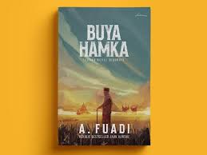
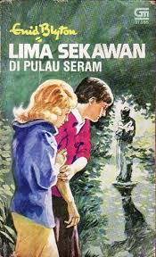
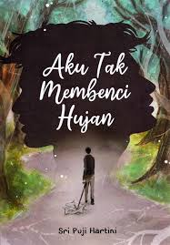
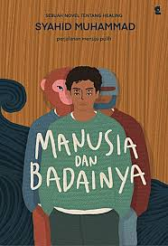
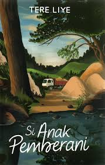
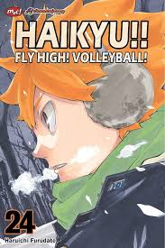
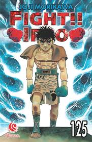
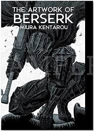

Bedah Buku: Negeri 5 Menara
Ditulis oleh: Ahmad Fuadi

Buku ini menceritakan perjalanan hidup Alif, seorang anak Minang yang menempuh pendidikan di pondok pesantren Madani. Awalnya penuh keraguan, namun perlahan Alif menemukan makna perjuangan, persahabatan, dan kekuatan impian.
“Di antara lelah dan doa, ilmu tumbuh perlahan.”
Kalimat itu menjadi semangat utama dalam buku ini. Kisah yang ditulis berdasarkan pengalaman nyata ini sangat menginspirasi, terutama bagi pelajar yang sedang mengejar mimpi mereka. Penulis berhasil menyampaikan pesan-pesan moral melalui narasi yang hidup.
Buku ini cocok dibaca oleh remaja dan orang dewasa yang sedang mencari motivasi hidup. Cerita persahabatan, perjuangan, dan cinta belajar membuatnya menyentuh dan relevan bagi pembaca di berbagai usia.
Bedah Buku: buya hamka
Ditulis oleh: Ahmad Fuadi

Buku Buya Hamka karya A. Fuadi menceritakan kisah hidup Buya Hamka, seorang ulama, sastrawan, dan tokoh besar Indonesia.
“Setiap huruf yang kau pahami, membuka satu pintu masa depan.”
Secara singkat, buku ini menggambarkan perjalanan hidup Buya Hamka sejak masa kecilnya, perjuangan dalam menuntut ilmu, hingga menjadi sosok berpengaruh dalam dunia Islam dan sastra Indonesia. Ceritanya inspiratif, penuh nilai keteguhan, keikhlasan, dan semangat belajar yang tinggi.
Buku ini cocok dibaca oleh remaja dan orang dewasa yang sedang mencari motivasi hidup. Cerita persahabatan, perjuangan, dan cinta belajar membuatnya menyentuh dan relevan bagi pembaca di berbagai usia.
Bedah buku:Lima Sekawan di Pulau Seram
Ditulis oleh: Enid Blyton.

Buku Lima Sekawan di Pulau Seram karya Enid Blyton** menceritakan petualangan seru lima sahabat—Julian, Dick, Anne, George, dan anjing mereka, Timmy.
“Belajar adalah cahaya kecil yang menuntun langkah gelapmu.”
Dalam cerita ini, mereka berlibur di sebuah pulau terpencil dan menemukan berbagai kejadian misterius yang menegangkan. Dengan keberanian dan kerja sama, mereka berusaha memecahkan misteri tersebut. Buku ini penuh petualangan, persahabatan, dan ketegangan yang menarik untuk pembaca remaja.
Buku ini cocok dibaca oleh remaja dan orang dewasa yang sedang mencari motivasi hidup. Cerita persahabatan, perjuangan, dan cinta belajar membuatnya menyentuh dan relevan bagi pembaca di berbagai usia.
Bedah Buku: Aku Tak Membenci Hujan
Ditulis oleh: Sri Puji Hartini

Buku Aku Tak Membenci Hujan karya Sri Puji Hartini merupakan novel yang mengangkat kisah tentang perasaan, luka batin, dan proses menerima kenyataan hidup.
“Peluh di meja belajar, kelak jadi senyum di hari wisuda.”
Secara singkat, cerita ini menggambarkan perjalanan tokoh utama dalam menghadapi kenangan dan kesedihan yang diibaratkan seperti hujan—datang tanpa diminta, namun membawa makna dan pelajaran. Novel ini penuh pesan tentang ketegaran, keikhlasan, dan harapan.
Buku ini cocok dibaca oleh remaja dan orang dewasa yang sedang mencari motivasi hidup. Cerita persahabatan, perjuangan, dan cinta belajar membuatnya menyentuh dan relevan bagi pembaca di berbagai usia.
Bedah Buku: Manusia dan Badainya
Ditulis oleh: Syahid Muhammad

Buku Manusia dan Badainya karya Syahid Muhammad adalah novel bertema healing dan refleksi diri.
“Dalam sunyi buku terbuka, mimpimu sedang disusun.”
Secara singkat, buku ini menceritakan tentang pergulatan batin seseorang dalam menghadapi “badai” kehidupan—seperti luka, trauma, dan tekanan emosional. Melalui kisah yang menyentuh, pembaca diajak memahami bahwa setiap manusia memiliki ujian, namun juga memiliki kekuatan untuk bangkit dan berdamai dengan dirinya sendiri.
Buku ini cocok dibaca oleh remaja dan orang dewasa yang sedang mencari motivasi hidup. Cerita persahabatan, perjuangan, dan cinta belajar membuatnya menyentuh dan relevan bagi pembaca di berbagai usia.
Bedah Buku: si anak pemberani
Ditulis oleh: Tere Liye

Buku Si Anak Pemberani karya Tere Liye merupakan bagian dari seri Si Anak yang mengangkat kisah kehidupan anak-anak di pedalaman Sumatra.
“Tak apa lambat, asal terus mendekat pada cita-cita.”
Secara singkat, novel ini menceritakan tentang seorang anak yang berani, teguh, dan pantang menyerah dalam menghadapi tantangan hidup. Ceritanya sarat nilai keberanian, persahabatan, keluarga, serta semangat untuk berjuang demi kebaikan.
Buku ini cocok dibaca oleh remaja dan orang dewasa yang sedang mencari motivasi hidup. Cerita persahabatan, perjuangan, dan cinta belajar membuatnya menyentuh dan relevan bagi pembaca di berbagai usia.
Bedah Buku: Haikyu!! Vol. 24: Fly High!! Volleyball!
Ditulis oleh:Haruichi Furudate

Buku **Haikyu!! Vol. 24: Fly High!! Volleyball! karya Haruichi Furudate melanjutkan kisah perjuangan tim voli SMA Karasuno dalam kompetisi nasional.
“Ilmu tak bersuara, tapi mengangkat derajatmu tinggi.”
Secara singkat, volume ini menampilkan pertandingan yang semakin menegangkan, strategi yang matang, serta semangat pantang menyerah para pemain. Ceritanya penuh aksi, kerja sama tim, dan perkembangan karakter yang membuat pembaca ikut merasakan atmosfer pertandingan yang intens.
Buku ini cocok dibaca oleh remaja dan orang dewasa yang sedang mencari motivasi hidup. Cerita persahabatan, perjuangan, dan cinta belajar membuatnya menyentuh dan relevan bagi pembaca di berbagai usia.
Bedah Buku: Hajime no Ippo
Ditulis oleh:Jyoji Morikawa

Buku Hajime no Ippo Volume 125 karya Jyoji Morikawa melanjutkan kisah perjalanan Ippo Makunouchi di dunia tinju profesional.
“Malam yang kau korbankan, pagi akan membalasnya.”
Secara singkat, volume ini menampilkan latihan keras, strategi pertarungan, dan perkembangan mental para petinju. Ceritanya penuh aksi, semangat pantang menyerah, serta perjuangan untuk menjadi lebih kuat, baik secara fisik maupun mental.
Buku ini cocok dibaca oleh remaja dan orang dewasa yang sedang mencari motivasi hidup. Cerita persahabatan, perjuangan, dan cinta belajar membuatnya menyentuh dan relevan bagi pembaca di berbagai usia.
Bedah Buku: Akademi Ouranos
Ditulis oleh: Sleepingangel

Buku Akademi Ouranos karya Sleepingangel mengisahkan petualangan sekelompok remaja yang bersekolah di sebuah akademi misterius bernama Ouranos.
“Belajar bukan sekadar membaca, tapi menumbuhkan harapan.”
Secara singkat, cerita ini memadukan unsur fantasi, persahabatan, dan tantangan yang harus mereka hadapi bersama. Di balik kehidupan sekolah yang tampak biasa, tersimpan rahasia dan konflik yang menguji keberanian serta kekompakan mereka.
Buku ini cocok dibaca oleh remaja dan orang dewasa yang sedang mencari motivasi hidup. Cerita persahabatan, perjuangan, dan cinta belajar membuatnya menyentuh dan relevan bagi pembaca di berbagai usia.
Bedah Buku: The Artwork of Berserk
Ditulis oleh: Kentaro Miura

Buku The Artwork of Berserk karya Kentaro Miura adalah kumpulan ilustrasi dari seri manga terkenal Berserk.
“Di balik catatan sederhana, tersimpan masa depan yang luar biasa.”
Kalimat itu menjadi semangat utama dalam buku ini. Kisah yang ditulis berdasarkan pengalaman nyata ini sangat menginspirasi, terutama bagi pelajar yang sedang mengejar mimpi mereka. Penulis berhasil menyampaikan pesan-pesan moral melalui narasi yang hidup.
Secara singkat, buku ini menampilkan berbagai karya seni detail dan epik yang memperlihatkan karakter, adegan, serta dunia gelap penuh fantasi yang menjadi ciri khas Berserk. Cocok untuk penggemar yang ingin menikmati keindahan visual dan proses kreatif di balik manga legendaris tersebut.
← Kembali ke Katalog